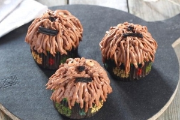
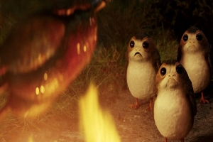
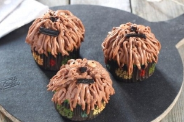
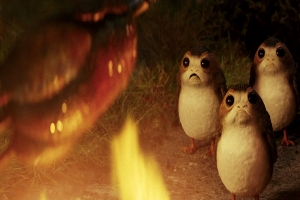

Leite de Bantha.
Aprenda a fazer queijos, manteiga, creme de leite e muito mais.Animal comum nos palnetas da orla exterior como Batuu,Lah'mu,Lothal e Tatooine.Está linda criatura de areas deserticas é muito calma e não requer muitos cuidados e provem muitos recursos . Na proxima semana iremos encinar como fazer a famosa e alcoólica Gelada de leiteAzul,muito popular entre os povos do deserto.
Cupcacke de Chewbacca.
Fácil de fazer,uma delicia você vai fazer o maior sucesso em casa, nas festinhas das crianças e até mesmo coma turma do império afinal que não quer tirar um pedaço deste rebelde.
Porg. Mascote ou comida?.
Porgs uma espécie de ave marinha ,nativa do planeta Anch-To. Algo bem polêmico gira em torno desteas aves marinhas ,seriam pets ou um delicioso petisco. Pensando nisso a star tour junto com a star news criaram um concurso. Basta responder a enquete que você encontra em nossa PROGRAMAÇÃO, e concorra a uma viagem para Anch-Tostrong Um planeta lindo coberto de água salpicado com paradisíacas ilhas,saiba mais no link a cima.